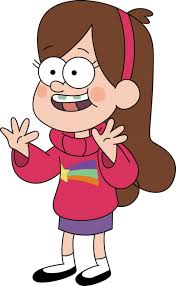
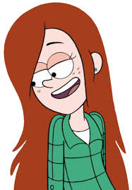
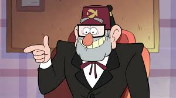

Мейбл
Мейбл Пайнс — одна из главных героев мультсериала Гравити Фолз. Персонаж создан Алексом Хиршем и озвучен Кристен Шаал. Прототипом образа Мейбл послужила сестра-близнец Алекса Хирша, Ариэль Хирш[1][2]. Персонаж был хорошо воспринят критикой[3]. Мейбл впервые появляется в безымянной пилотной серии, не вошедшей в канву мультсериала безымянного пилота, подготовленной Хиршем для демонстрации своей задумки; затем Мэйбл появилась на первом эпизоде Гравити Фолз «Секреты Гравити Фолз[en]». С тех пор Мэйбл со своим братом Диппером Пайнсом фигурировали в каждой серии мультсериала. Мейбл также посвящено несколько сопутствующих основному сериалу мини-эпизодов, в частности «Советы Мейбл» и «Альбом памятных событий Мейбл».
Диппер

«Гравити Фолз», брат-близнец Мэйбл Пайнс. Персонажа озвучивал, в основном, Джейсон Риттер[2]. Прототипом послужил сам Алекс Хирш в детстве и его одноклассник[3]. По словам режиссёра, у того парня были ужасные прыщи, которые напоминали, например, созвездие Орион, а позже — Большой ковш (англ. Big dipper) из созвездия Большой Медведицы. На лбу Диппера Пайнса есть родимое пятно как раз в виде Ковша Большой Медведицы[4]. Впервые Диппер появился в неназванном пилоте, созданном Хиршем; в сериале появляется в эпизоде Секреты Гравити Фолз[5]. Вместе со своей сестрой-близнецом Мэйбл играет главную роль в сериале.
Венди
Вэнди Блёрбл Кордрой (ориг. Wendy Blerble Corduroy) — девочка-подросток, живущая в Гравити Фолз, подрабатывающая в неполный рабочий день в Хижине Чудес.[5] Диппер влюблён в неё, и она это знает. В эпизоде «В бункер» он признаётся в любви. В эпизоде «Свинья путешественника во времени», она начинает встречаться с Робби во всех вариантах времени. Но в конечном варианте Пухля опрокидывает чашу с водой на Робби, после чего он уходит. Робби, в эпизоде «Парнепокалипсис», загипнотизировал её. В конечном счёте, она расстаётся с ним в этом же эпизоде. В колесе Билла её знак — пакет со льдом.
Пухля

Пухля (англ. Waddles) — домашний, ручной поросёнок Мэйбл, которого она выиграла на Ярмарке Чудес в эпизоде «Свинья путешественника во времени».
Стэн
Стэнли «Стэн» Пайнс (англ. Stanley «Stan» Pines), ранее известный как Стэнфорд Пайнс[22][3] — двоюродный дедушка Диппера и Мэйбл Пайнс, постоянный житель городка Гравити Фолз. После многих лет мошенничества и преступлений он поселился в отдаленном городке Гравити Фолз, штат Орегон[23], где руководит ловушкой для туристов, Хижиной Чудес. Несмотря на изначальный скептицизм по отношению к сверхъестественному[4], позже выясняется, что он сам тесно связан с паранормальными явлениями в Гравити Фолз[24][25].